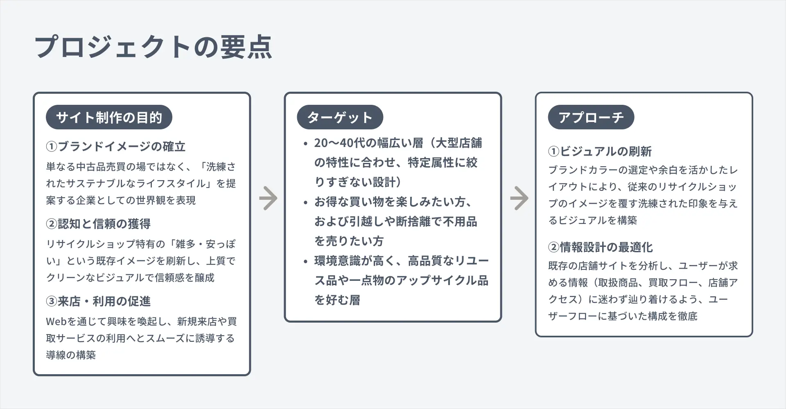
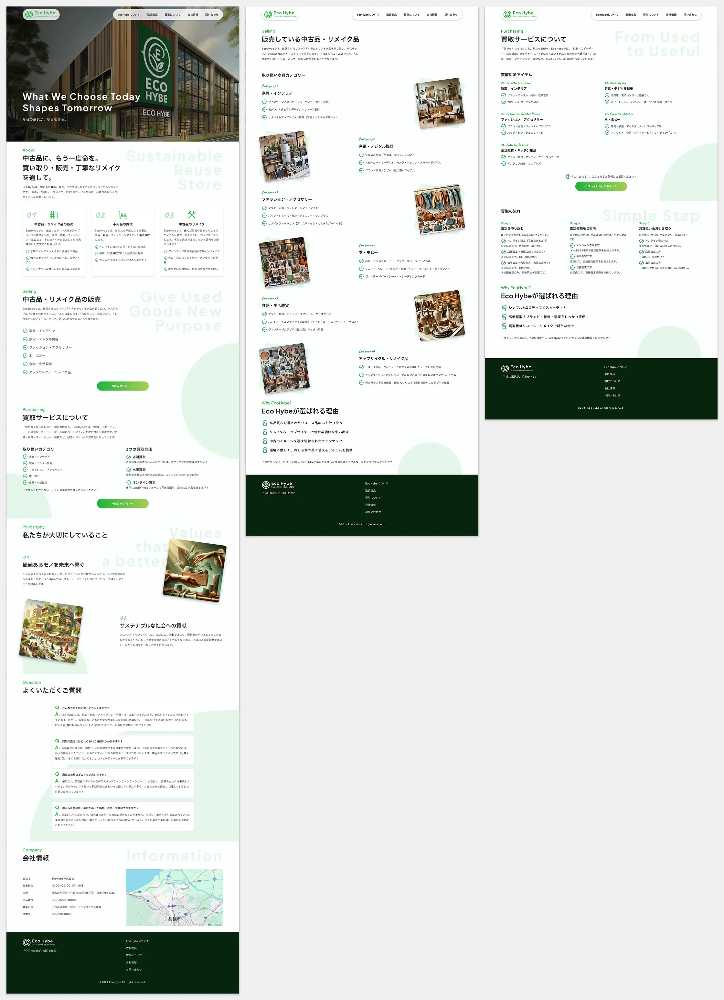
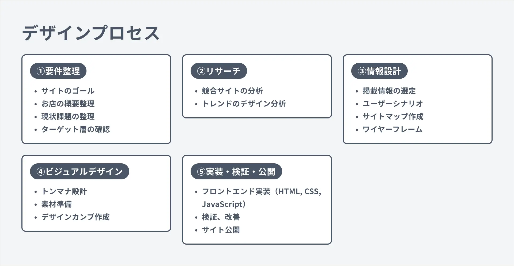
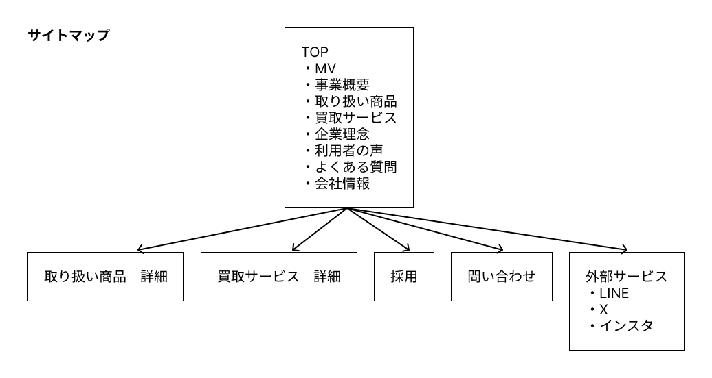
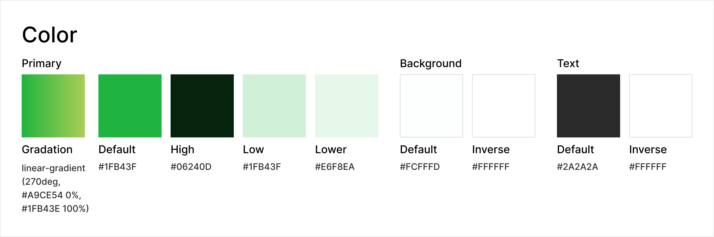
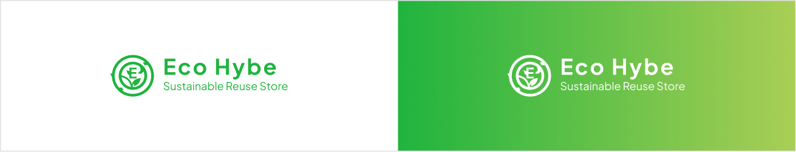

リサイクルショップの店舗サイト
- Webサイト
- 自主制作

架空のリサイクルショップ「EcoHybe」の店舗サイトを制作しました。 本サイトはポートフォリオ用に制作したもので、Webデザインのスキルやブランド表現力を伝えることを目的としています。
- カテゴリー：店舗サイト
- 制作種別：自主制作
- 担当領域：企画、デザイン、コーディング
- 使用ツール等：Figma, HTML, CSS(Sass), JavaScript, git, Github
- 制作期間：3週間
プロジェクト概要
本プロジェクトは、架空のリサイクルショップ「EcoHybe」からの依頼を想定した、ブランドサイトの構築プロジェクトです。 実務を想定し、店舗の理念を伝える「顔」としての役割と、実際の来店・利用へ繋げる「導線」の両立を目指しました。
デザインのポイントとしては、従来のリサイクルショップが持つ「雑多」「安っぽい」といったイメージを覆し、洗練されており進歩的な印象を与えるビジュアルを構築。 また、実際の来店・利用へ繋げる「導線」の役割を意識して、情報設計を徹底しました。

最終成果物

Eco Hybeの店舗サイトはこちら
EcoHybe（エコハイブ）は、「今日の選択が、明日を作る」というコンセプトを掲げる、サステナブル志向のリユースショップです。
デザインプロセス
デザインプロセスは以下の手順で進めました。以下の章で詳細なプロセスを紹介します。

1. 要件整理
本プロジェクトは、新規開業するリサイクルショップ「EcoHybe」からの依頼を想定した自主制作です。実務における要件を想定し、以下の設定を構築して制作を開始しました。
クライアント情報
EcoHybe（エコハイブ）は、「今日の選択が、明日を作る」というコンセプトを掲げる、サステナブル志向のリユースショップです。 ただの中古品販売ではなく、価値あるプロダクトの“再流通”と“再発見”を目的とし、販売・買取・リメイクの3つのサービスを展開。 環境への配慮はもちろん、デザイン性や品質にもこだわり、使う人の感性やライフスタイルに寄り添うアイテムを提供します。 店舗やWebも含めたすべての体験を通じて、「エコを楽しむ」文化を広めていくことを目指しています。
今回はこのお店の新規開業にあたり、Webサイトを制作したいという依頼を想定したプロジェクトです。
サイト制作の目的
- ブランドサイトの構築： 新規開業に伴い、会社の顔となるWebサイトを作りたい
- ブランドイメージの体現： 洗練されたサステナブルな企業イメージをWeb上で表現
- 認知拡大と集客： Webを通じて興味関心を喚起し、認知拡大や新規来店、サービスの利用へ繋げる
ターゲット層
- 基本属性： 20代〜40代の男女（大型店舗のため、幅広く設定）
- お得に買い物を楽しみたい人
- 引越しや断捨離で不用品を売りたい人
- 環境意識が高い層
2. リサーチ
次に、リサーチとして、競合サイトの分析および、デザイントレンドの分析、参考となるサイトの収集を行いました。
- 競合サイトの分析： リサイクル業界や中古品買取サービスのWebサイトを広く調査し、掲載情報の優先順位と構成を比較しました。
- デザイントレンドの分析： 現代のWebデザインにおけるトレンドを分析し、EcoHybeのブランドイメージに合致する手法を検討しました。
- ビジュアルリファレンスの収集： 「リサイクルショップ」という既存の枠組みにとらわれず、ライフスタイルブランドやセレクトショップのWebサイトから、上質さを感じさせるトーン＆マナーを模索し、店舗のコンセプトを視覚的に裏付けるための参考資料を収集しました。
3. 情報設計
リサーチ結果に基づき、ブランドの信頼性を伝えるコンセプト、利用ハードルを下げる買取フロー、取扱商品の3点を軸に情報の優先順位を整理しました。 これらを基に、ユーザーが迷わず目的のページへ辿り着けるサイト構造を策定し、サイトマップとワイヤーフレームを作成。 情報の配置をこの段階で徹底して検証することで、デザインの土台を構築しました。

4. ビジュアルデザイン
「エコ＝安っぽい」「中古＝雑多」という先入観を払拭し、高品質で洗練された体験を伝えるため、配色・余白・タイポグラフィ等を設計しました。
具体的には、配色はサステナブルや自然なイメージを連想させるグリーンの系統をメインに設定し、ボタンはアクセントとして、グラデーションを使用することで、単調にならず洗練された印象を与えるようにしています。

Eco Hybeのロゴは、サステナブルな価値循環と自然との調和を象徴しています。 中央の「E」は“Eco”と“Exchange”の頭文字を表し、葉と矢印のモチーフは、リユース・リメイクを通じたモノの再生と、人から人へとつながる循環の概念を示しています。 全体を円で構成することで、終わりのないサイクルと、持続可能な暮らしへの想いを表現しています。 グリーンを基調とした配色は、環境への配慮と、明るく先進的なブランドイメージを補強しています。

最終的に出来上がったデザインカンプは以下。
5. 実装・公開・検証改善
作成したデザインカンプを基に、HTML/CSS(Sass)およびJavaScriptを用いて実装しました。 あらゆる閲覧環境で最適な体験を提供するため、モバイルファーストのレスポンシブ対応に加え、アクセシビリティや表示速度、視認性の多角的な検証を実施。 特定デバイスでのレイアウト崩れや読み込み負荷などの課題を洗い出し、細部まで改善を繰り返すことで、実用性と品質を兼ね備えた状態で公開しました。
Eco Hybeの店舗サイトはこちら
EcoHybe（エコハイブ）は、「今日の選択が、明日を作る」というコンセプトを掲げる、サステナブル志向のリユースショップです。